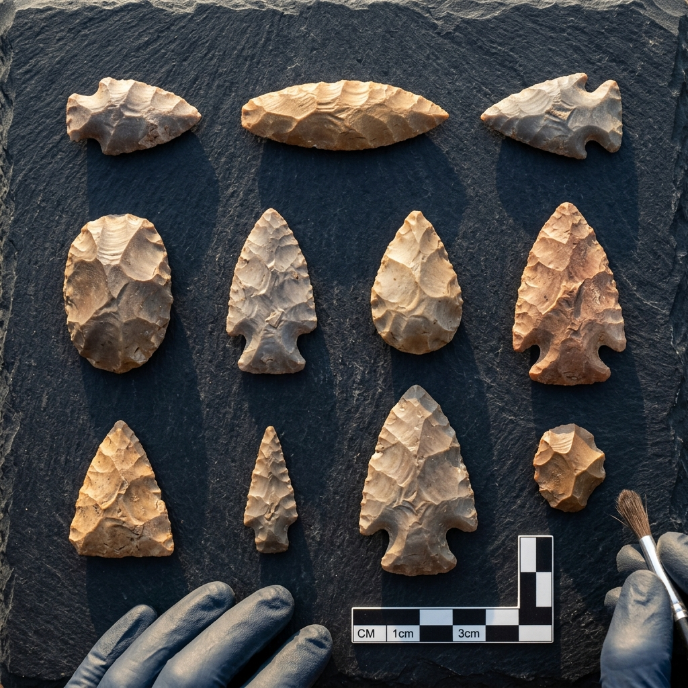
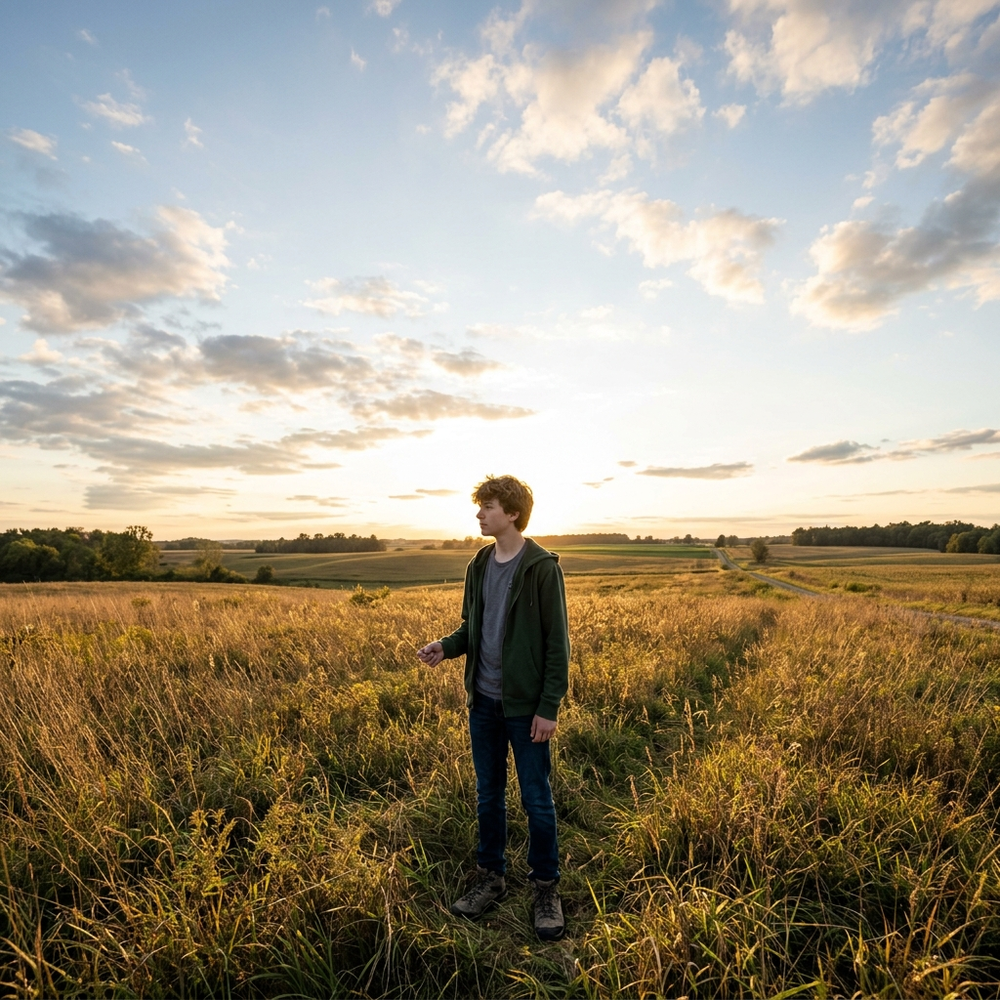
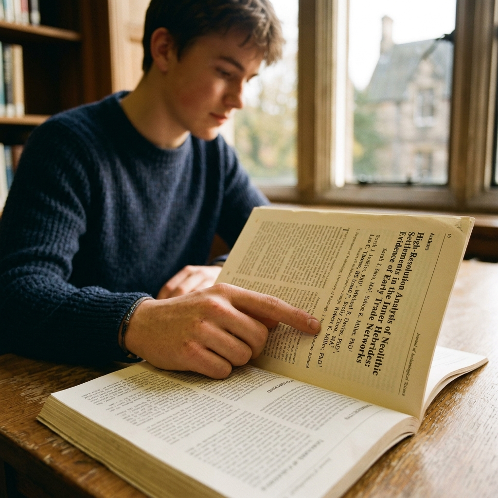
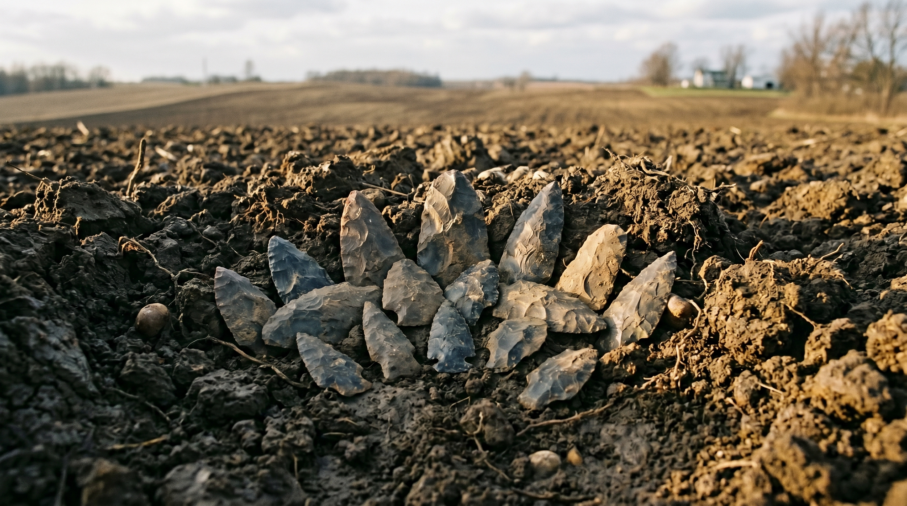
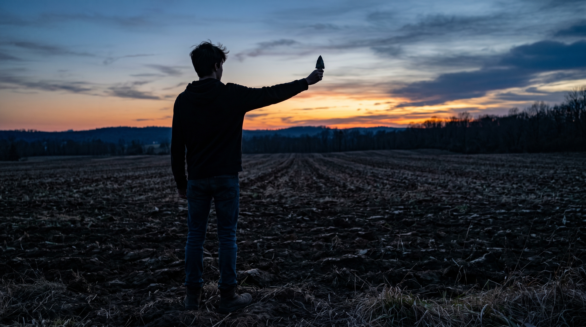

Project Context
§ 01The Challenge / Hypothesis
In January 2021, an 11-year-old boy named Joshua Fetter was walking near Sugarcreek, Ohio when he spotted something unusual in the soil. He picked up what turned out to be 11 stone tools — and had no idea what he was holding. The question the story asks: what happens when the past reaches forward and touches someone in the present?
The Solution / Innovation
Joshua's tools were eventually connected to Metin Eren's Experimental Archaeology lab at Kent State. Analysis confirmed they are approximately 2,000-year-old Adena culture artifacts — one of the most significant amateur-discovery finds in recent Ohio archaeology. The paper documenting the cache, co-authored by Joshua (now 17), has been accepted for publication in the Journal of Archaeological Science Reports with 11 authors. The artifacts are destined for the Cleveland Museum of Natural History. This is a story about what science does with a child's curiosity: it takes it seriously.
Scientific Workflow
§ 02The Discovery Site
A generalized field location near Sugarcreek, Ohio. (Do NOT photograph or name the specific property — looting risk. Use wide landscape shots that suggest rural Ohio without identifying the site.)
First Examination
The tools in Joshua's hands — when he first brought them in. The moment of contact between a child's discovery and professional scientific attention.
Laboratory Analysis
The tools examined in Eren's lab — measurement, photography, comparison with known Adena artifacts. The moment a family heirloom becomes a peer-reviewed specimen.
Publication and Preservation
Joshua as co-author. The paper. The artifacts moving toward the Cleveland Museum of Natural History — the final chapter of the object's journey from a field to a museum vitrine.
---
Shot Concepts
§ 03Joshua holding the artifacts — or a close replica of them — looking directly into camera. He is 17. The tools are ~2,000 years old. The age gap between the subject and the objects tells the whole story without a caption. Warm, direct, editorial. Location: Eren's lab or a neutral environment.
- Position the tools at mid-frame, between Joshua and the camera
- His hands carry the story — make sure they are sharp
- Eye contact is essential — this is a portrait of a person who did something remarkable, not just a documentation shot
- Keep background clean: lab environment with soft bokeh, or black seamless
- Vertical for print / horizontal for web header
Technical Notes
Setup Diagram

AI Visualization Prompt
The 11 Adena artifacts laid out on an examination surface — all together, as a complete set, lit from the side. This is the full scope of the discovery in a single frame. Gloved hands optional. A label or ruler for scale. Clean, precise, archival-quality composition.
- Use a matte natural surface — not white seamless; too clinical
- Sidelight at a low angle to reveal surface texture on each tool
- Arrange by size or type — not random; the layout should feel intentional
- Include a scale bar if available from the lab
- This is potentially publishable as a scientific record image
Technical Notes
Setup Diagram

AI Visualization Prompt
Joshua in a generalized rural Ohio field — wide, open sky, tall grass or agricultural landscape. He does not need to be at the actual discovery site. This is the visual representation of "a boy walking in Ohio and finding the past." He is small in the frame; the landscape is the context.
- No identifying landmarks, fences, or property structures in frame
- Golden hour for warmth — this is a story about wonder, not forensics
- Shoot wide: 24–35mm, Joshua in the lower third of the frame
- He can be looking toward the horizon or down at the ground — both work
- This is the "chapter break" image in editorial layout — not the hero
Technical Notes
Setup Diagram

AI Visualization Prompt
A close-up of the published paper (or a printout of the accepted manuscript) open to the author list — Joshua Fetter's name visible among the 11 co-authors. His hand in frame, pointing to or resting near his own name. The simplest possible image that documents what is genuinely remarkable about this story.
- Print the manuscript if the final paper isn't yet published
- Warm, directional light — not flat overhead
- Joshua's hand must be in the frame — this is a human image, not a product shot
- Can be vertical or horizontal
- Pairs as a closing image in editorial layout
Technical Notes
Setup Diagram

AI Visualization Prompt
The conceptual problem with the original prompts: A teenager holding rocks is a nice portrait. But the real story is temporal collision — an 11-year-old child's hand reaching into 2,000 years of silence. The images need to feel like time, not documentation.
The idea: The tools are placed back in dark Ohio soil — a freshly turned furrow, a plowed field. No human in the frame. The tools rest in the earth exactly as they might have looked the moment before Joshua picked them up. The ground is still disturbed. The tools look both found and lost simultaneously. This is the image of discovery from the opposite direction: not the moment they were lifted out, but the moment just before.
Technical Notes
Setup Diagram

AI Visualization Prompt
The idea: Joshua photographed from behind at dusk, standing at the edge of a plowed field. He holds one tool at arm's length toward the horizon, silhouetted against a fading sky. The tool is between him and the world — impossibly old, impossibly light. We cannot see his face. We see only the gesture: a teenager extending something ancient toward the sky as if offering it back, or trying to understand the distance between himself and whoever made it.
Technical Notes
Setup Diagram
